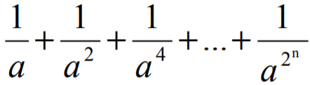

a + b =
a - b =
a · b =
a + b =
a - b =
a · b =
Объем куба равен s3, где s — длина одного (любого) ребра куба.
s3 =
Площадь боковой поверхности куба:
S = 4a2 =
Cреднее арифметическое:
aср.арифм =
|
a1+
a2+
…+ an
n
|
aср.арифм =

aср.геом =
aср.арифм
=
aср.геом
=
t =

S =
а) длины высот ha;
б) длины медиан
ma;
в) длины
биссектрис L;
г) радиусы вписанной r и описанной окружностей R.


ha =

ma =

L =

R =

r =

d =
а) max (x + y + z, x • y • z)
б) min2(x + y + z/2, x • y • z) + 1
Result:
Result:
a) 2n
б) n!
в)
г)
д)
е)
ж)
а) an
б) a(a + 1)...(a + n - 1)
в)
г)
д) a(a - n)(a - 2n)...(a - n2)
Rezult: